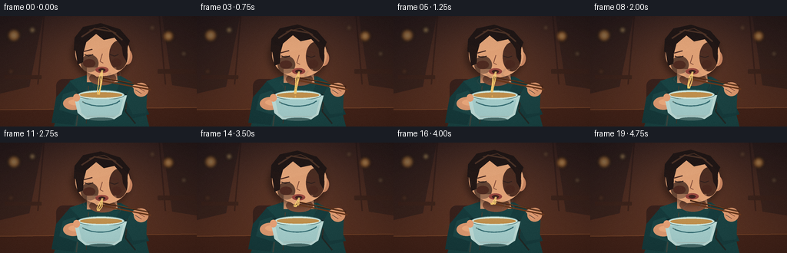
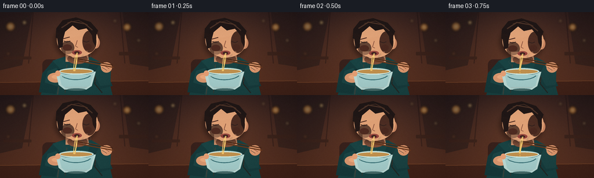

CODING AGENTS AS PIXEL WORLD MODELS
traex/GPT-5.6-Sol · motion_rationality_0000
点击播放 · 原生 RGB 像素
逐轮保存的候选
回放视频、检查图与代码变化。
每份候选均可单独播放。实际图片检查记录在下方工具轨迹中。
候选 01播放与检查图
点击播放 · 原生 RGB 像素


展开代码变化
--- 上一保存版本
+++ 本次保存版本
@@ -0,0 +1,237 @@
+from pathlib import Path
+import math
+import numpy as np
+from PIL import Image, ImageDraw, ImageFilter
+import artifact_io
+
+W,H,N = 256,144,20
+S=4
+rng=np.random.default_rng(314159)
+
+# Supersampled drawing helpers
+def sc(v): return int(round(v*S))
+def box(b): return tuple(sc(v) for v in b)
+def pts(p): return [(sc(x),sc(y)) for x,y in p]
+def ellipse(d,b,fill,outline=None,width=1): d.ellipse(box(b),fill=fill,outline=outline,width=sc(width) if outline else 1)
+def polygon(d,p,fill): d.polygon(pts(p),fill=fill)
+def line(d,p,fill,width=1,joint='curve'): d.line(pts(p),fill=fill,width=sc(width),joint=joint)
+def rr(d,b,r,fill,outline=None,width=1): d.rounded_rectangle(box(b),radius=sc(r),fill=fill,outline=outline,width=sc(width))
+
+def bezier(p0,p1,p2,p3,n=30):
+ out=[]
+ for u in np.linspace(0,1,n):
+ v=1-u
+ out.append((v**3*p0[0]+3*v*v*u*p1[0]+3*v*u*u*p2[0]+u**3*p3[0],
+ v**3*p0[1]+3*v*v*u*p1[1]+3*v*u*u*p2[1]+u**3*p3[1]))
+ return out
+
+def gradient_bg():
+ h,w=H*S,W*S
+ yy=np.linspace(0,1,h)[:,None]
+ xx=np.linspace(0,1,w)[None,:]
+ top=np.array([42,27,28.]); bot=np.array([92,50,33.])
+ a=np.repeat(yy,w,axis=1)[...,None]
+ arr=top*(1-a)+bot*a
+ # warm pool of light behind the subject
+ glow=np.exp(-(((xx-.49)/.52)**2+((yy-.32)/.7)**2)*2.0)[...,None]
+ arr += glow*np.array([25,15,7])
+ return Image.fromarray(np.uint8(np.clip(arr,0,255)),'RGB').convert('RGBA')
+
+BASE=gradient_bg()
+# fixed, out-of-focus restaurant lights
+BOKEH=[(18,25,8,(255,170,74,105)),(42,18,4,(255,208,123,115)),(219,26,7,(255,161,60,115)),
+ (239,49,3,(255,218,147,100)),(198,15,3,(255,203,128,85)),(14,72,3,(244,147,60,65))]
+
+def draw_frame(i):
+ t=i/(N-1)
+ phase=2*math.pi*t
+ im=BASE.copy()
+ # background windows/paneling
+ bg=Image.new('RGBA',im.size,(0,0,0,0)); d=ImageDraw.Draw(bg)
+ polygon(d,[(0,0),(56,0),(38,92),(0,101)],(29,22,24,115))
+ polygon(d,[(211,0),(256,0),(256,95),(224,90)],(31,22,22,110))
+ for x in [57,207]: line(d,[(x,0),(x-8 if x<100 else x+8,89)],(30,18,18,100),2)
+ # vague counter/shelves
+ rr(d,(6,77,54,82),1,(31,20,18,100)); rr(d,(205,69,254,75),1,(32,20,17,100))
+ im=Image.alpha_composite(im,bg)
+ lights=Image.new('RGBA',im.size,(0,0,0,0)); ld=ImageDraw.Draw(lights)
+ for x,y,r,c in BOKEH:
+ ellipse(ld,(x-r,y-r,x+r,y+r),c)
+ ellipse(ld,(x-r*.35,y-r*.35,x+r*.35,y+r*.35),(255,231,176,min(160,c[3]+30)))
+ lights=lights.filter(ImageFilter.GaussianBlur(sc(2.2)))
+ im=Image.alpha_composite(im,lights)
+
+ # table and cast shadow
+ layer=Image.new('RGBA',im.size,(0,0,0,0)); d=ImageDraw.Draw(layer)
+ polygon(d,[(0,122),(256,119),(256,144),(0,144)],(67,35,25,255))
+ line(d,[(0,122),(256,119)],(142,82,46,180),1)
+ ellipse(d,(73,125,191,140),(26,14,12,105))
+ im=Image.alpha_composite(im,layer)
+
+ # Motion: a continuous, gentle lean toward the bowl.
+ lean=2.2*math.sin(math.pi*t) + 0.35*math.sin(phase*2)
+ bob=0.45*math.sin(phase)
+ hy=lean+bob
+ bowlbob=.45*math.sin(phase+.4)
+ # rear silhouette / torso
+ layer=Image.new('RGBA',im.size,(0,0,0,0)); d=ImageDraw.Draw(layer)
+ # chair hint
+ rr(d,(73,82,104,142),9,(46,27,25,190))
+ # torso in deep teal sweater
+ polygon(d,[(91,84+hy*.25),(112,77+hy*.35),(157,78+hy*.35),(180,91),(194,144),(70,144)],(25,67,67,255))
+ polygon(d,[(91,85),(73,106),(67,139),(96,142),(107,102)],(22,58,59,255))
+ polygon(d,[(158,82),(178,91),(194,128),(170,134),(150,101)],(23,60,61,255))
+ # fabric highlights/folds
+ line(d,[(91,100),(102,119),(99,143)],(53,94,91,150),2)
+ line(d,[(166,99),(163,124),(176,140)],(12,45,48,150),2)
+ line(d,[(115,91),(112,140)],(46,84,81,90),1)
+ # neck
+ polygon(d,[(113,67+hy),(151,67+hy),(153,86+hy*.5),(113,86+hy*.5)],(214,150,111,255))
+ ellipse(d,(116,72+hy,151,90+hy*.5),(178,112,82,120))
+ im=Image.alpha_composite(im,layer)
+
+ # head shadow
+ shadow=Image.new('RGBA',im.size,(0,0,0,0)); sd=ImageDraw.Draw(shadow)
+ ellipse(sd,(94,18+hy,169,82+hy),(18,10,10,120))
+ shadow=shadow.filter(ImageFilter.GaussianBlur(sc(4)))
+ im=Image.alpha_composite(im,shadow)
+
+ # face/head
+ layer=Image.new('RGBA',im.size,(0,0,0,0)); d=ImageDraw.Draw(layer)
+ # ear behind
+ ellipse(d,(158,43+hy,172,63+hy),(200,132,96,255))
+ ellipse(d,(161,47+hy,168,59+hy),(144,84,68,160))
+ # face base, slightly three-quarter
+ ellipse(d,(98,18+hy,169,78+hy),(226,164,121,255))
+ polygon(d,[(104,49+hy),(109,68+hy),(126,79+hy),(145,76+hy),(162,60+hy),(160,35+hy)],(224,161,118,255))
+ # face warm side shading
+ ellipse(d,(142,32+hy,166,70+hy),(184,112,84,48))
+ ellipse(d,(105,50+hy,128,73+hy),(255,190,144,58))
+ # hair cap and side locks
+ polygon(d,[(96,44+hy),(97,28+hy),(108,14+hy),(131,9+hy),(156,17+hy),(169,32+hy),(163,47+hy),
+ (155,35+hy),(149,28+hy),(135,31+hy),(125,23+hy),(112,34+hy),(108,49+hy)],(32,23,22,255))
+ polygon(d,[(97,35+hy),(101,63+hy),(108,60+hy),(109,38+hy)],(35,24,22,255))
+ polygon(d,[(157,29+hy),(166,38+hy),(165,60+hy),(160,51+hy)],(36,24,22,255))
+ # hair highlights
+ line(d,[(106,27+hy),(123,16+hy),(146,20+hy),(159,31+hy)],(83,57,44,190),2)
+ line(d,[(116,18+hy),(135,14+hy),(151,22+hy)],(100,66,47,120),1)
+ # eyebrows and closed/concentrated eyes
+ line(d,[(109,46+hy),(120,43+hy)],(76,43,34,255),1.5)
+ line(d,[(143,43+hy),(154,46+hy)],(76,43,34,255),1.5)
+ # eyes mostly lowered while eating
+ line(d,[(110,50+hy),(115,52+hy),(121,50+hy)],(48,32,29,255),1.2)
+ line(d,[(143,50+hy),(149,52+hy),(154,50+hy)],(48,32,29,255),1.2)
+ # nose
+ line(d,[(133,49+hy),(130,59+hy),(134,61+hy)],(164,96,72,170),1)
+ # cheeks
+ ellipse(d,(108,56+hy,124,67+hy),(226,112,91,35)); ellipse(d,(145,55+hy,158,66+hy),(219,105,83,30))
+ # pursed lips with dark center, shaped around noodles
+ ellipse(d,(124,66+hy,141,74+hy),(143,65,59,255))
+ ellipse(d,(128,68+hy,137,72.5+hy),(62,34,30,255))
+ line(d,[(125,68+hy),(132,66.8+hy),(140,69+hy)],(192,93,78,190),.8)
+ im=Image.alpha_composite(im,layer)
+
+ # arms and hands around bowl/chopsticks
+ layer=Image.new('RGBA',im.size,(0,0,0,0)); d=ImageDraw.Draw(layer)
+ # left sleeve and hand supporting bowl
+ polygon(d,[(82,102),(97,97),(110,111+bowlbob),(103,130),(77,122)],(28,69,69,255))
+ ellipse(d,(82,105+bowlbob,108,122+bowlbob),(222,154,113,255))
+ ellipse(d,(89,108+bowlbob,110,116+bowlbob),(238,171,126,255))
+ # right bent arm / raised hand
+ polygon(d,[(171,91),(191,101),(190,126),(173,128),(162,107)],(27,67,67,255))
+ hand_y=-2.0*t + .35*math.sin(phase)
+ # fingers wrapped around chopsticks
+ ellipse(d,(174,87+hand_y,193,105+hand_y),(221,151,109,255))
+ polygon(d,[(171,91+hand_y),(180,87+hand_y),(189,95+hand_y),(181,103+hand_y)],(228,158,115,255))
+ # finger separations
+ line(d,[(178,92+hand_y),(188,98+hand_y)],(165,97,76,160),.7)
+ line(d,[(176,96+hand_y),(184,101+hand_y)],(165,97,76,140),.7)
+ im=Image.alpha_composite(im,layer)
+
+ # Bowl (in front of hands), contents and ceramic detail
+ layer=Image.new('RGBA',im.size,(0,0,0,0)); d=ImageDraw.Draw(layer)
+ by=bowlbob
+ # outer dark rim
+ ellipse(d,(96,96+by,165,111+by),(19,39,41,255))
+ ellipse(d,(99,98+by,162,108+by),(218,176,102,255)) # broth
+ # noodle coils in broth
+ for k in range(5):
+ y=100.2+by+k*.9
+ line(d,[(105+k*2,y+1),(119+k*1.3,y-1),(135+k*.5,y+1),(155-k,y)],(240,202,123,230),1)
+ # bowl body
+ polygon(d,[(96,103+by),(165,103+by),(158,128+by),(149,134+by),(111,134+by),(101,126+by)],(190,220,215,255))
+ ellipse(d,(101,96+by,162,109+by),(211,235,227,255),outline=(89,133,132,255),width=1)
+ ellipse(d,(104,99+by,159,106+by),(193,145,78,255))
+ # bowl front glaze shadow/highlight
+ polygon(d,[(102,108+by),(160,108+by),(155,127+by),(147,132+by),(113,132+by),(106,126+by)],(166,207,205,255))
+ bez=bezier((107,111+by),(119,119+by),(144,119+by),(156,110+by))
+ line(d,bez,(61,121,128,200),1.5)
+ line(d,[(113,130+by),(150,130+by)],(232,245,237,180),1)
+ ellipse(d,(116,132+by,147,136+by),(80,114,112,220))
+ # small thumb visible at rim
+ ellipse(d,(95,101+by,104,111+by),(231,161,118,255))
+ im=Image.alpha_composite(im,layer)
+
+ # chopsticks: their tips rise slightly as the noodles shorten
+ layer=Image.new('RGBA',im.size,(0,0,0,0)); d=ImageDraw.Draw(layer)
+ tip_y=82+hy*.25-4.5*t
+ hand=(187,94+hand_y)
+ line(d,[(194,92+hand_y),(130,tip_y-2)],(67,34,20,255),2)
+ line(d,[(196,96+hand_y),(131,tip_y+2)],(103,55,28,255),2)
+ # golden lacquer glint
+ line(d,[(192,91.6+hand_y),(132,tip_y-2.4)],(209,132,58,180),.55)
+ im=Image.alpha_composite(im,layer)
+
+ # Noodles: continuous physical shortening from broth to lips.
+ mouth=(133,70.4+hy)
+ # smoothstep makes the last dangling tail disappear naturally
+ p=t*t*(3-2*t)
+ tail_y=(102+by)*(1-p)+(tip_y+1)*p
+ noodles=Image.new('RGBA',im.size,(0,0,0,0)); nd=ImageDraw.Draw(noodles)
+ if t < .985:
+ offsets=[-2.0,0.2,2.1]
+ for j,off in enumerate(offsets):
+ mx=mouth[0]+off*.30
+ tx=130.5+off
+ # upper segment enters pursed lips and bends at chopstick pinch
+ curve=bezier((mx,mouth[1]),(mx-1,74+hy),(tx+1,77+hy),(tx,tip_y),22)
+ line(nd,curve,(246,205,116,255),1.25)
+ line(nd,[(curve[0][0]-.2,curve[0][1]),(curve[-1][0]-.2,curve[-1][1])],(255,230,153,90),.35)
+ if tail_y > tip_y+1.0:
+ sway=1.1*math.sin(phase*1.2+j*1.7)
+ curve2=bezier((tx,tip_y),(tx+sway,tip_y+5),(128+off+sway,tail_y-5),(128+off*.5,tail_y),25)
+ line(nd,curve2,(244,200,107,255),1.25)
+ # tiny broth drop near the lowest strand early in shot
+ if .14<t<.42:
+ dy=tail_y+2+5*((t-.14)/.28)
+ ellipse(nd,(127.4,dy,129.1,dy+2.6),(238,180,83,210))
+ im=Image.alpha_composite(im,noodles)
+
+ # Steam in front: coherent upward drift, wavy and translucent.
+ steam=Image.new('RGBA',im.size,(0,0,0,0)); sd=ImageDraw.Draw(steam)
+ for j,(sx,base,amp) in enumerate([(111,97,2.3),(124,98,2.7),(143,97,2.2),(155,99,1.8)]):
+ # particles move upward then wrap invisibly at bowl, each with own phase
+ u=(t*1.05+j*.23)%1.0
+ bottom=base+by-u*21
+ alpha=int(95*math.sin(math.pi*min(max(u,0),1)))+18
+ path=[]
+ for q in np.linspace(0,1,28):
+ y=bottom-q*13
+ x=sx+amp*math.sin((q*2.1+phase*.22+j)*math.pi)
+ path.append((x,y))
+ line(sd,path,(239,238,220,alpha),1.0)
+ steam=steam.filter(ImageFilter.GaussianBlur(sc(.7)))
+ im=Image.alpha_composite(im,steam)
+
+ # cinematic edge vignette and subtle fixed grain
+ arr=np.asarray(im.convert('RGB').resize((W,H),Image.Resampling.LANCZOS)).astype(np.float32)
+ yy,xx=np.mgrid[0:H,0:W]
+ vign=1-0.17*np.clip(((xx-W/2)/(W*.65))**2+((yy-H/2)/(H*.72))**2,0,1)
+ arr*=vign[...,None]
+ # deterministic fine grain, varied each frame but very restrained
+ gr=np.random.default_rng(1000+i).normal(0,0.75,(H,W,1))
+ arr=np.clip(arr+gr,0,255).astype(np.uint8)
+ return arr
+
+frames=np.stack([draw_frame(i) for i in range(N)])
+artifact_io.save(frames, Path(__file__).resolve().parent)
候选 02播放与检查图
点击播放 · 原生 RGB 像素

展开代码变化
--- 上一保存版本
+++ 本次保存版本
@@ -87,7 +87,7 @@
line(d,[(115,91),(112,140)],(46,84,81,90),1)
# neck
polygon(d,[(113,67+hy),(151,67+hy),(153,86+hy*.5),(113,86+hy*.5)],(214,150,111,255))
- ellipse(d,(116,72+hy,151,90+hy*.5),(178,112,82,120))
+ ellipse(d,(116,72+hy,151,90+hy*.5),(190,124,91,255))
im=Image.alpha_composite(im,layer)
# head shadow
@@ -100,13 +100,13 @@
layer=Image.new('RGBA',im.size,(0,0,0,0)); d=ImageDraw.Draw(layer)
# ear behind
ellipse(d,(158,43+hy,172,63+hy),(200,132,96,255))
- ellipse(d,(161,47+hy,168,59+hy),(144,84,68,160))
+ ellipse(d,(161,47+hy,168,59+hy),(171,103,78,255))
# face base, slightly three-quarter
ellipse(d,(98,18+hy,169,78+hy),(226,164,121,255))
polygon(d,[(104,49+hy),(109,68+hy),(126,79+hy),(145,76+hy),(162,60+hy),(160,35+hy)],(224,161,118,255))
# face warm side shading
- ellipse(d,(142,32+hy,166,70+hy),(184,112,84,48))
- ellipse(d,(105,50+hy,128,73+hy),(255,190,144,58))
+ ellipse(d,(142,32+hy,166,70+hy),(207,139,102,255))
+ ellipse(d,(105,50+hy,128,73+hy),(237,177,134,255))
# hair cap and side locks
polygon(d,[(96,44+hy),(97,28+hy),(108,14+hy),(131,9+hy),(156,17+hy),(169,32+hy),(163,47+hy),
(155,35+hy),(149,28+hy),(135,31+hy),(125,23+hy),(112,34+hy),(108,49+hy)],(32,23,22,255))
@@ -124,7 +124,7 @@
# nose
line(d,[(133,49+hy),(130,59+hy),(134,61+hy)],(164,96,72,170),1)
# cheeks
- ellipse(d,(108,56+hy,124,67+hy),(226,112,91,35)); ellipse(d,(145,55+hy,158,66+hy),(219,105,83,30))
+ ellipse(d,(108,56+hy,124,67+hy),(231,153,124,255)); ellipse(d,(145,55+hy,158,66+hy),(215,135,108,255))
# pursed lips with dark center, shaped around noodles
ellipse(d,(124,66+hy,141,74+hy),(143,65,59,255))
ellipse(d,(128,68+hy,137,72.5+hy),(62,34,30,255))
@@ -213,7 +213,7 @@
# particles move upward then wrap invisibly at bowl, each with own phase
u=(t*1.05+j*.23)%1.0
bottom=base+by-u*21
- alpha=int(95*math.sin(math.pi*min(max(u,0),1)))+18
+ alpha=int(135*math.sin(math.pi*min(max(u,0),1)))+28
path=[]
for q in np.linspace(0,1,28):
y=bottom-q*13
候选 03播放与检查图
可观测工具轨迹
实际执行的命令与返回图片。
命令 1exit 0
/bin/bash -lc "cat prompt.txt && printf '\\n---RULES---\\n' && cat GENERATION_RULES.md && printf '\\n---SPEC---\\n' && cat task_spec.json"
命令 2exit 0
/bin/bash -lc "find . -maxdepth 2 -type f -printf '%p\\n' | sort"
命令 3exit 0
/bin/bash -lc 'cat artifact_io.py'
命令 4exit 0
/bin/bash -lc "cat > generate.py <<'PY'
from pathlib import Path
import math
import numpy as np
from PIL import Image, ImageDraw, ImageFilter
import artifact_io
W,H,N = 256,144,20
S=4
rng=np.random.default_rng(314159)
# Supersampled drawing helpers
def sc(v): return int(round(v*S))
def box(b): return tuple(sc(v) for v in b)
def pts(p): return [(sc(x),sc(y)) for x,y in p]
def ellipse(d,b,fill,outline=None,width=1): d.ellipse(box(b),fill=fill,outline=outline,width=sc(width) if outline else 1)
def polygon(d,p,fill): d.polygon(pts(p),fill=fill)
def line(d,p,fill,width=1,joint='curve'): d.line(pts(p),fill=fill,width=sc(width),joint=joint)
def rr(d,b,r,fill,outline=None,width=1): d.rounded_rectangle(box(b),radius=sc(r),fill=fill,outline=outline,width=sc(width))
def bezier(p0,p1,p2,p3,n=30):
out=[]
for u in np.linspace(0,1,n):
v=1-u
out.append((v**3*p0[0]+3*v*v*u*p1[0]+3*v*u*u*p2[0]+u**3*p3[0],
v**3*p0[1]+3*v*v*u*p1[1]+3*v*u*u*p2[1]+u**3*p3[1]))
return out
def gradient_bg():
h,w=H*S,W*S
yy=np.linspace(0,1,h)[:,None]
xx=np.linspace(0,1,w)[None,:]
top=np.array([42,27,28.]); bot=np.array([92,50,33.])
a=np.repeat(yy,w,axis=1)[...,None]
arr=top*(1-a)+bot*a
# warm pool of light behind the subject
glow=np.exp(-(((xx-.49)/.52)**2+((yy-.32)/.7)**2)*2.0)[...,None]
arr += glow*np.array([25,15,7])
return Image.fromarray(np.uint8(np.clip(arr,0,255)),'RGB').convert('RGBA')
BASE=gradient_bg()
# fixed, out-of-focus restaurant lights
BOKEH=[(18,25,8,(255,170,74,105)),(42,18,4,(255,208,123,115)),(219,26,7,(255,161,60,115)),
(239,49,3,(255,218,147,100)),(198,15,3,(255,203,128,85)),(14,72,3,(244,147,60,65))]
def draw_frame(i):
t=i/(N-1)
phase=2*math.pi*t
im=BASE.copy()
# background windows/paneling
bg=Image.new('RGBA',im.size,(0,0,0,0)); d=ImageDraw.Draw(bg)
polygon(d,[(0,0),(56,0),(38,92),(0,101)],(29,22,24,115))
polygon(d,[(211,0),(256,0),(256,95),(224,90)],(31,22,22,110))
for x in [57,207]: line(d,[(x,0),(x-8 if x<100 else x+8,89)],(30,18,18,100),2)
# vague counter/shelves
rr(d,(6,77,54,82),1,(31,20,18,100)); rr(d,(205,69,254,75),1,(32,20,17,100))
im=Image.alpha_composite(im,bg)
lights=Image.new('RGBA',im.size,(0,0,0,0)); ld=ImageDraw.Draw(lights)
for x,y,r,c in BOKEH:
ellipse(ld,(x-r,y-r,x+r,y+r),c)
ellipse(ld,(x-r*.35,y-r*.35,x+r*.35,y+r*.35),(255,231,176,min(160,c[3]+30)))
lights=lights.filter(ImageFilter.GaussianBlur(sc(2.2)))
im=Image.alpha_composite(im,lights)
# table and cast shadow
layer=Image.new('RGBA',im.size,(0,0,0,0)); d=ImageDraw.Draw(layer)
polygon(d,[(0,122),(256,119),(256,144),(0,144)],(67,35,25,255))
line(d,[(0,122),(256,119)],(142,82,46,180),1)
ellipse(d,(73,125,191,140),(26,14,12,105))
im=Image.alpha_composite(im,layer)
# Motion: a continuous, gentle lean toward the bowl.
lean=2.2*math.sin(math.pi*t) + 0.35*math.sin(phase*2)
bob=0.45*math.sin(phase)
hy=lean+bob
bowlbob=.45*math.sin(phase+.4)
# rear silhouette / torso
layer=Image.new('RGBA',im.size,(0,0,0,0)); d=ImageDraw.Draw(layer)
# chair hint
rr(d,(73,82,104,142),9,(46,27,25,190))
# torso in deep teal sweater
polygon(d,[(91,84+hy*.25),(112,77+hy*.35),(157,78+hy*.35),(180,91),(194,144),(70,144)],(25,67,67,255))
polygon(d,[(91,85),(73,106),(67,139),(96,142),(107,102)],(22,58,59,255))
polygon(d,[(158,82),(178,91),(194,128),(170,134),(150,101)],(23,60,61,255))
# fabric highlights/folds
line(d,[(91,100),(102,119),(99,143)],(53,94,91,150),2)
line(d,[(166,99),(163,124),(176,140)],(12,45,48,150),2)
line(d,[(115,91),(112,140)],(46,84,81,90),1)
# neck
polygon(d,[(113,67+hy),(151,67+hy),(153,86+hy*.5),(113,86+hy*.5)],(214,150,111,255))
ellipse(d,(116,72+hy,151,90+hy*.5),(178,112,82,120))
im=Image.alpha_composite(im,layer)
# head shadow
shadow=Image.new('RGBA',im.size,(0,0,0,0)); sd=ImageDraw.Draw(shadow)
ellipse(sd,(94,18+hy,169,82+hy),(18,10,10,120))
shadow=shadow.filter(ImageFilter.GaussianBlur(sc(4)))
im=Image.alpha_composite(im,shadow)
# face/head
layer=Image.new('RGBA',im.size,(0,0,0,0)); d=ImageDraw.Draw(layer)
# ear behind
ellipse(d,(158,43+hy,172,63+hy),(200,132,96,255))
ellipse(d,(161,47+hy,168,59+hy),(144,84,68,160))
# face base, slightly three-quarter
ellipse(d,(98,18+hy,169,78+hy),(226,164,121,255))
polygon(d,[(104,49+hy),(109,68+hy),(126,79+hy),(145,76+hy),(162,60+hy),(160,35+hy)],(224,161,118,255))
# face warm side shading
ellipse(d,(142,32+hy,166,70+hy),(184,112,84,48))
ellipse(d,(105,50+hy,128,73+hy),(255,190,144,58))
# hair cap and side locks
polygon(d,[(96,44+hy),(97,28+hy),(108,14+hy),(131,9+hy),(156,17+hy),(169,32+hy),(163,47+hy),
(155,35+hy),(149,28+hy),(135,31+hy),(125,23+hy),(112,34+hy),(108,49+hy)],(32,23,22,255))
polygon(d,[(97,35+hy),(101,63+hy),(108,60+hy),(109,38+hy)],(35,24,22,255))
polygon(d,[(157,29+hy),(166,38+hy),(165,60+hy),(160,51+hy)],(36,24,22,255))
# hair highlights
line(d,[(106,27+hy),(123,16+hy),(146,20+hy),(159,31+hy)],(83,57,44,190),2)
line(d,[(116,18+hy),(135,14+hy),(151,22+hy)],(100,66,47,120),1)
# eyebrows and closed/concentrated eyes
line(d,[(109,46+hy),(120,43+hy)],(76,43,34,255),1.5)
line(d,[(143,43+hy),(154,46+hy)],(76,43,34,255),1.5)
# eyes mostly lowered while eating
line(d,[(110,50+hy),(115,52+hy),(121,50+hy)],(48,32,29,255),1.2)
line(d,[(143,50+hy),(149,52+hy),(154,50+hy)],(48,32,29,255),1.2)
# nose
line(d,[(133,49+hy),(130,59+hy),(134,61+hy)],(164,96,72,170),1)
# cheeks
ellipse(d,(108,56+hy,124,67+hy),(226,112,91,35)); ellipse(d,(145,55+hy,158,66+hy),(219,105,83,30))
# pursed lips with dark center, shaped around noodles
ellipse(d,(124,66+hy,141,74+hy),(143,65,59,255))
ellipse(d,(128,68+hy,137,72.5+hy),(62,34,30,255))
line(d,[(125,68+hy),(132,66.8+hy),(140,69+hy)],(192,93,78,190),.8)
im=Image.alpha_composite(im,layer)
# arms and hands around bowl/chopsticks
layer=Image.new('RGBA',im.size,(0,0,0,0)); d=ImageDraw.Draw(layer)
# left sleeve and hand supporting bowl
polygon(d,[(82,102),(97,97),(110,111+bowlbob),(103,130),(77,122)],(28,69,69,255))
ellipse(d,(82,105+bowlbob,108,122+bowlbob),(222,154,113,255))
ellipse(d,(89,108+bowlbob,110,116+bowlbob),(238,171,126,255))
# right bent arm / raised hand
polygon(d,[(171,91),(191,101),(190,126),(173,128),(162,107)],(27,67,67,255))
hand_y=-2.0*t + .35*math.sin(phase)
# fingers wrapped around chopsticks
ellipse(d,(174,87+hand_y,193,105+hand_y),(221,151,109,255))
polygon(d,[(171,91+hand_y),(180,87+hand_y),(189,95+hand_y),(181,103+hand_y)],(228,158,115,255))
# finger separations
line(d,[(178,92+hand_y),(188,98+hand_y)],(165,97,76,160),.7)
line(d,[(176,96+hand_y),(184,101+hand_y)],(165,97,76,140),.7)
im=Image.alpha_composite(im,layer)
# Bowl (in front of hands), contents and ceramic detail
layer=Image.new('RGBA',im.size,(0,0,0,0)); d=ImageDraw.Draw(layer)
by=bowlbob
# outer dark rim
ellipse(d,(96,96+by,165,111+by),(19,39,41,255))
ellipse(d,(99,98+by,162,108+by),(218,176,102,255)) # broth
# noodle coils in broth
for k in range(5):
y=100.2+by+k*.9
line(d,[(105+k*2,y+1),(119+k*1.3,y-1),(135+k*.5,y+1),(155-k,y)],(240,202,123,230),1)
# bowl body
polygon(d,[(96,103+by),(165,103+by),(158,128+by),(149,134+by),(111,134+by),(101,126+by)],(190,220,215,255))
ellipse(d,(101,96+by,162,109+by),(211,235,227,255),outline=(89,133,132,255),width=1)
ellipse(d,(104,99+by,159,106+by),(193,145,78,255))
# bowl front glaze shadow/highlight
polygon(d,[(102,108+by),(160,108+by),(155,127+by),(147,132+by),(113,132+by),(106,126+by)],(166,207,205,255))
bez=bezier((107,111+by),(119,119+by),(144,119+by),(156,110+by))
line(d,bez,(61,121,128,200),1.5)
line(d,[(113,130+by),(150,130+by)],(232,245,237,180),1)
ellipse(d,(116,132+by,147,136+by),(80,114,112,220))
# small thumb visible at rim
ellipse(d,(95,101+by,104,111+by),(231,161,118,255))
im=Image.alpha_composite(im,layer)
# chopsticks: their tips rise slightly as the noodles shorten
layer=Image.new('RGBA',im.size,(0,0,0,0)); d=ImageDraw.Draw(layer)
tip_y=82+hy*.25-4.5*t
hand=(187,94+hand_y)
line(d,[(194,92+hand_y),(130,tip_y-2)],(67,34,20,255),2)
line(d,[(196,96+hand_y),(131,tip_y+2)],(103,55,28,255),2)
# golden lacquer glint
line(d,[(192,91.6+hand_y),(132,tip_y-2.4)],(209,132,58,180),.55)
im=Image.alpha_composite(im,layer)
# Noodles: continuous physical shortening from broth to lips.
mouth=(133,70.4+hy)
# smoothstep makes the last dangling tail disappear naturally
p=t*t*(3-2*t)
tail_y=(102+by)*(1-p)+(tip_y+1)*p
noodles=Image.new('RGBA',im.size,(0,0,0,0)); nd=ImageDraw.Draw(noodles)
if t < .985:
offsets=[-2.0,0.2,2.1]
for j,off in enumerate(offsets):
mx=mouth[0]+off*.30
tx=130.5+off
# upper segment enters pursed lips and bends at chopstick pinch
curve=bezier((mx,mouth[1]),(mx-1,74+hy),(tx+1,77+hy),(tx,tip_y),22)
line(nd,curve,(246,205,116,255),1.25)
line(nd,[(curve[0][0]-.2,curve[0][1]),(curve[-1][0]-.2,curve[-1][1])],(255,230,153,90),.35)
if tail_y > tip_y+1.0:
sway=1.1*math.sin(phase*1.2+j*1.7)
curve2=bezier((tx,tip_y),(tx+sway,tip_y+5),(128+off+sway,tail_y-5),(128+off*.5,tail_y),25)
line(nd,curve2,(244,200,107,255),1.25)
# tiny broth drop near the lowest strand early in shot
if .14<t<.42:
dy=tail_y+2+5*((t-.14)/.28)
ellipse(nd,(127.4,dy,129.1,dy+2.6),(238,180,83,210))
im=Image.alpha_composite(im,noodles)
# Steam in front: coherent upward drift, wavy and translucent.
steam=Image.new('RGBA',im.size,(0,0,0,0)); sd=ImageDraw.Draw(steam)
for j,(sx,base,amp) in enumerate([(111,97,2.3),(124,98,2.7),(143,97,2.2),(155,99,1.8)]):
# particles move upward then wrap invisibly at bowl, each with own phase
u=(t*1.05+j*.23)%1.0
bottom=base+by-u*21
alpha=int(95*math.sin(math.pi*min(max(u,0),1)))+18
path=[]
for q in np.linspace(0,1,28):
y=bottom-q*13
x=sx+amp*math.sin((q*2.1+phase*.22+j)*math.pi)
path.append((x,y))
line(sd,path,(239,238,220,alpha),1.0)
steam=steam.filter(ImageFilter.GaussianBlur(sc(.7)))
im=Image.alpha_composite(im,steam)
# cinematic edge vignette and subtle fixed grain
arr=np.asarray(im.convert('RGB').resize((W,H),Image.Resampling.LANCZOS)).astype(np.float32)
yy,xx=np.mgrid[0:H,0:W]
vign=1-0.17*np.clip(((xx-W/2)/(W*.65))**2+((yy-H/2)/(H*.72))**2,0,1)
arr*=vign[...,None]
# deterministic fine grain, varied each frame but very restrained
gr=np.random.default_rng(1000+i).normal(0,0.75,(H,W,1))
arr=np.clip(arr+gr,0,255).astype(np.uint8)
return arr
frames=np.stack([draw_frame(i) for i in range(N)])
artifact_io.save(frames, Path(__file__).resolve().parent)
PY
python generate.py
ls -lh pixels.npz inspection.png index.html frames/00.png"命令 5exit 0
/bin/bash -lc "python generate.py && python - <<'PY'
import json, numpy as np
from pathlib import Path
z=np.load('pixels.npz')['pixels']
s=json.load(open('task_spec.json'))
print('pixels',z.shape,z.dtype,'range',int(z.min()),int(z.max()))
print('frames',len(list(Path('frames').glob('*.png'))),'html',Path('index.html').stat().st_size)
PY"视觉工具实际返回图片 1

视觉工具实际返回图片 2

视觉工具实际返回图片 3

保存候选 3 份；完成命令 5 次；可验证图片返回 3 张。原始 API 响应与完整日志保留在本地。